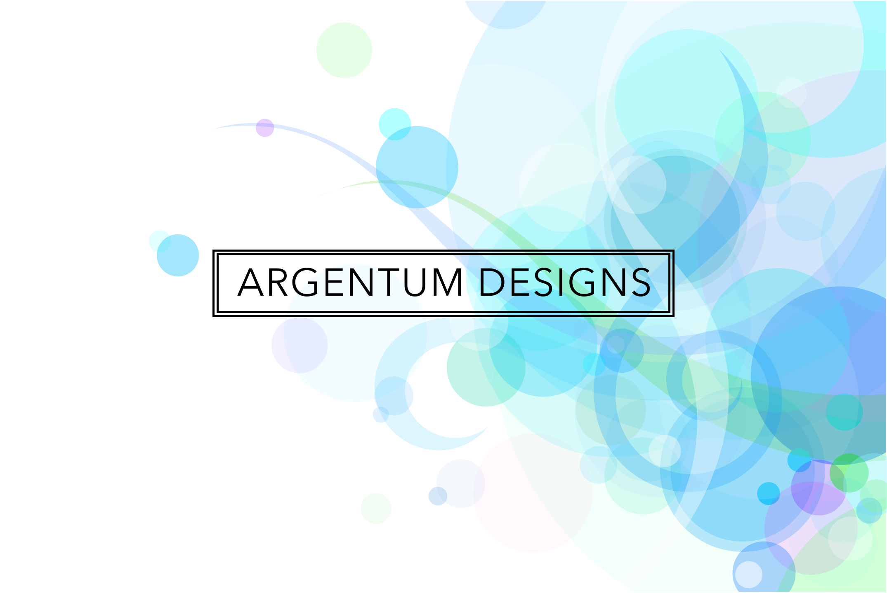

Sorry, but I don't exactly have a Dribbble profile in operation yet. Until I do, here's some new logo art I've been working on:

Note: Number Two is thanks to Ryan Lerch and his Inkscape Tutorials Blog. You can visit him
here.